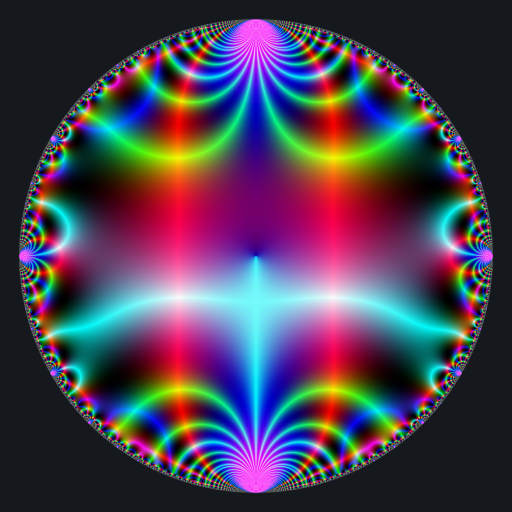

On a Möbius transformation
Consider a complex number \(\gamma\) such that \(|\gamma| < 1\) and the following matrix: \[ M = \begin{pmatrix} i & \gamma \\ \bar\gamma & -i \end{pmatrix}. \]
Then the Möbius transformation associated to this matrix is nice. Why? Because:
it maps the unit disk to itself;
it is of order \(2\);
its fractional powers have a closed form.
For these reasons, I often use this Möbius transformation in my shaders.
Let us derive the fractional powers of \(M\). We set \(h = \sqrt{1-|\gamma|^2}\).
The eigenvalues of \(M\) are \[ \begin{align} \lambda_1 & = -ih \\ \lambda_2 & = ih = \bar{\lambda_1} \end{align} \] with corresponding eigen vectors \[ \begin{align} v_1 & = \begin{pmatrix} (1-h)\dfrac{i\gamma}{|\gamma|^2} \\ 1 \end{pmatrix} \\ v_2 & = \begin{pmatrix} (1+h)\dfrac{i\gamma}{|\gamma|^2} \\ 1 \end{pmatrix}. \end{align} \] Let \(P = \begin{pmatrix} v_1 & v_2 \end{pmatrix}\). Then \[ \frac{1}{\det(P)} = \frac{i\bar\gamma}{2h} \] and for any complex numbers \(d_1\) and \(d_2\), \[ P \begin{pmatrix} d_1 & 0 \\ 0 & d_2 \end{pmatrix} P^{-1} = \frac{1}{2h} \begin{pmatrix} d_2(1+h)-d_1(1-h) & i(d_1-d_2)\gamma \\ i(d_1-d_2)\bar\gamma & d_1(1+h)-d_2(1-h) \end{pmatrix}. \]
In particular, \(M^t\) is given by \[ \begin{pmatrix} a & b \\ \bar b & \bar a \end{pmatrix} \] where \[ \begin{align} a & = \Re(d_1) - i \dfrac{\Im(d_1)}{h}, \\ b & = \gamma \dfrac{\Im(d_2)}{h}, \\ d_1 & = \bar{d_2}, \\ d_2 & = h^t \exp\left(i\dfrac{t\pi}{2}\right). \end{align} \]
M_power_t <- function(gamma, t){
h <- sqrt(1-Mod(gamma)^2)
d2 <- h^t * (cos(t*pi/2) + 1i*sin(t*pi/2))
d1 <- Conj(d2)
a <- Re(d1) - 1i*Im(d1)/h
b <- gamma * Im(d2)/h
c <- Conj(b)
d <- Conj(a)
c(a = a, b = b, c = c, d = d)
}Let’s apply this Möbius transformation now. Here is a visualization of the Dedekind eta function, a complex function availale in the jacobi package:
# background color
bkgcol <- rgb(21, 25, 30, maxColorValue = 255)
modulo <- function(a, p) {
a - p * ifelse(a > 0, floor(a/p), ceiling(a/p))
}
colormap <- function(z){
if(is.na(z)){
return(bkgcol)
}
if(is.infinite(z) || is.nan(z)){
return("#000000")
}
x <- Re(z)
y <- Im(z)
r <- modulo(Mod(z), 1)
g <- 2 * abs(modulo(atan2(y, x), 0.5))
b <- abs(modulo(x*y, 1))
if(is.nan(b)){
return("#000000")
}
rgb(
8 * (1 - cos(r-0.5)),
8 * (1 - cos(g-0.5)),
8 * (1 - cos(b-0.5)),
maxColorValue = 1
)
}
library(jacobi)
f <- Vectorize(function(x, y){
q <- x + 1i*y
if(Mod(q) > 0.9999 || (Im(q) == 0 && Re(q) <= 0)){
return(bkgcol)
}
tau <- -1i * log(q) / pi
z <- eta(tau)
colormap(z)
})
x <- y <- seq(-1, 1, len = 2000)
image <- outer(x, y, f)
opar <- par(mar = c(0,0,0,0), bg = bkgcol)
plot(
c(-100, 100), c(-100, 100), type = "n",
xlab = "", ylab = "", axes = FALSE, asp = 1
)
rasterImage(image, -100, -100, 100, 100)
par(opar)
Here is how to apply the Möbius transformation for one value of the power \(t\):
Mobius <- M_power_t(gamma = 0.7 - 0.3i, t = ...)
a <- Mobius["a"]
b <- Mobius["b"]
c <- Mobius["c"]
d <- Mobius["d"];
f <- Vectorize(function(x, y){
q0 <- x + 1i*y
q <- (a*q0 + b) / (c*q0 + d)
if(Mod(q) > 0.9999 || (Im(q) == 0 && Re(q) <= 0)){
return(bkgcol)
}
tau <- -1i * log(q) / pi
z <- eta(tau)
colormap(z)
})
x <- y <- seq(-1, 1, len = 2000)
image <- outer(x, y, f)Then it suffices to run this code for \(t\) varying from \(0\) to \(2\), and to save the image for each value of \(t\). But this would be very slow. Actually I implemented the image generation with Rcpp. Here is the result:

My Rcpp code is available in the Github version of the jacobi package. The R code which generates an image for one value of \(t\) is:
x <- seq(-1, 1, len = 2000L)
gamma <- 0.7 - 0.3i
t <- ...
image <- jacobi:::Image_eta(x, gamma, t)
opar <- par(mar = c(0,0,0,0), bg = bkgcol)
plot(
c(-100, 100), c(-100, 100), type = "n",
xlab = "", ylab = "", axes = FALSE, asp = 1
)
rasterImage(image, -100, -100, 100, 100)
par(opar)You can also play with jacobi:::Image_E4 and jacobi:::Image_E6,
which respectively generate a visualization of the Eisenstein series of
weight \(4\) and a visualization of the Eisenstein series of weight \(6\).